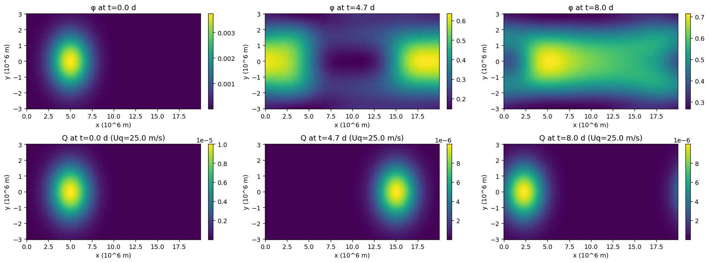

# Shallow-water β-plane with linear damping and moving Gaussian heating Q
# Additions vs previous:
# - Linear damping: -eps*u, -eps*v, -eps*phi
# - Heating Q(y,x,t): Gaussian that moves eastward with user-set speed Uq
# Q0 [m^2 s^-3], widths sigma_x, sigma_y; periodic in x via wrapped distance.
#
# You can change: eps, Uq, Q0, sigma_x, sigma_y, center latitude yc, etc.
import numpy as np
import matplotlib.pyplot as plt
# -------------------------
# 1) Domain, parameters
# -------------------------
c = 50.0 # gravity wave speed (m/s)
beta = 2.3e-11 # β parameter (1/(m s))
Lx = 2.0e7 # 20,000 km
Ly = 6.0e6 # 6,000 km
Nx = 256
Ny = 129
dx = Lx / Nx
dy = Ly / (Ny - 1)
x = np.linspace(0, Lx - dx, Nx)
y = np.linspace(-Ly/2, Ly/2, Ny)
Y = y[:, None] * np.ones((1, Nx))
# FFT wavenumbers for x-derivatives
kx = 2.0 * np.pi * np.fft.fftfreq(Nx, d=dx)
ikx = 1j * kx
# Time control
tmax = 8 * 24 * 3600.0 # 8 days
# CFL with gravity wave and advection of heating; include Uq later after it's defined
# We'll compute dt after defining heating speed below.
# -------------------------
# 2) Damping & Heating parameters (user-editable)
# -------------------------
eps = 1.0 / (10.0 * 24 * 3600.0) # linear damping rate: 10-day e-folding
Uq = 25.0 # eastward heating propagation speed (m/s) <-- change this
Q0 = 1.0e-5 # amplitude of Q (m^2 s^-3)
sigma_x = 0.08 * Lx
sigma_y = 0.20 * Ly
x0 = 0.25 * Lx
yc = 0.0
# Now set dt with both c and Uq (safety factor 0.4)
dt_cfl = 0.4 * min(dx, dy) / max(c, abs(Uq))
dt = dt_cfl
nsteps = int(np.ceil(tmax / dt))
# -------------------------
# 3) Helpers
# -------------------------
def ddx_periodic(F):
Fhat = np.fft.fft(F, axis=1)
return np.fft.ifft(ikx * Fhat, axis=1).real
def ddy_bounded(F):
Fg_top = F[1:2, :]
Fg_bot = F[-2:-1, :]
Fext = np.vstack([Fg_top, F, Fg_bot])
return (Fext[2:, :] - Fext[:-2, :]) / (2 * dy)
def apply_wall_bcs(u, v, phi):
v[0, :], v[-1, :] = 0.0, 0.0
u[0, :], u[-1, :] = u[1, :], u[-2, :]
phi[0, :], phi[-1, :] = phi[1, :], phi[-2, :]
def Q_forcing(t):
"""Moving Gaussian heating, periodic in x via wrapped distance."""
xc = (x0 + Uq * t) % Lx
X = np.ones((Ny, 1)) * x[None, :]
# minimal periodic distance
dxp = np.abs(X - xc)
dxp = np.minimum(dxp, Lx - dxp)
return Q0 * np.exp(-(dxp**2)/(2*sigma_x**2) - ((Y - yc)**2)/(2*sigma_y**2))
# -------------------------
# 4) Tendencies with damping and heating
# -------------------------
def tendencies(u, v, phi, t):
phix = ddx_periodic(phi)
phiy = ddy_bounded(phi)
ux = ddx_periodic(u)
vy = ddy_bounded(v)
by = beta * Y
Q = Q_forcing(t)
du = -phix + by * v - eps * u
dv = -phiy - by * u - eps * v
dphi = -c**2 * (ux + vy) - eps * phi + Q
# Clean tendencies at walls
du[0, :], du[-1, :] = du[1, :], du[-2, :]
dv[0, :], dv[-1, :] = 0.0, 0.0
dphi[0, :], dphi[-1, :] = dphi[1, :], dphi[-2, :]
return du, dv, dphi, Q
# -------------------------
# 5) Initial condition: rest state (u=v=φ=0)
# -------------------------
u = np.zeros((Ny, Nx))
v = np.zeros((Ny, Nx))
phi = np.zeros((Ny, Nx))
apply_wall_bcs(u, v, phi)
# -------------------------
# 6) Time stepping (RK4) and snapshots
# -------------------------
nout = 12
sample_every = max(1, nsteps // nout)
snap_phi = []
snap_Q = []
t = 0.0
for n in range(nsteps):
du1, dv1, dphi1, Q1 = tendencies(u, v, phi, t)
u1 = u + 0.5 * dt * du1; v1 = v + 0.5 * dt * dv1; phi1 = phi + 0.5 * dt * dphi1
apply_wall_bcs(u1, v1, phi1)
du2, dv2, dphi2, _ = tendencies(u1, v1, phi1, t + 0.5*dt)
u2 = u + 0.5 * dt * du2; v2 = v + 0.5 * dt * dv2; phi2 = phi + 0.5 * dt * dphi2
apply_wall_bcs(u2, v2, phi2)
du3, dv3, dphi3, _ = tendencies(u2, v2, phi2, t + 0.5*dt)
u3 = u + dt * du3; v3 = v + dt * dv3; phi3 = phi + dt * dphi3
apply_wall_bcs(u3, v3, phi3)
du4, dv4, dphi4, _ = tendencies(u3, v3, phi3, t + dt)
u += (dt / 6.0) * (du1 + 2*du2 + 2*du3 + du4)
v += (dt / 6.0) * (dv1 + 2*dv2 + 2*dv3 + dv4)
phi += (dt / 6.0) * (dphi1 + 2*dphi2 + 2*dphi3 + dphi4)
apply_wall_bcs(u, v, phi)
t += dt
if (n % sample_every) == 0 or n == nsteps - 1:
snap_phi.append((t, phi.copy()))
snap_Q.append((t, Q1.copy()))
# -------------------------
# 7) Plot φ and Q snapshots at start, middle, end
# -------------------------
fig, axes = plt.subplots(2, 3, figsize=(16, 6), dpi=140)
for col, (ti, phii) in enumerate([snap_phi[0], snap_phi[len(snap_phi)//2], snap_phi[-1]]):
im1 = axes[0, col].pcolormesh(x/1e6, y/1e6, phii, shading='auto')
axes[0, col].set_title(f'φ at t={ti/86400:.1f} d')
axes[0, col].set_xlabel('x (10^6 m)'); axes[0, col].set_ylabel('y (10^6 m)')
fig.colorbar(im1, ax=axes[0, col], fraction=0.046, pad=0.04)
for col, (ti, Qi) in enumerate([snap_Q[0], snap_Q[len(snap_Q)//2], snap_Q[-1]]):
im2 = axes[1, col].pcolormesh(x/1e6, y/1e6, Qi, shading='auto')
axes[1, col].set_title(f'Q at t={ti/86400:.1f} d (Uq={Uq} m/s)')
axes[1, col].set_xlabel('x (10^6 m)'); axes[1, col].set_ylabel('y (10^6 m)')
fig.colorbar(im2, ax=axes[1, col], fraction=0.046, pad=0.04)
fig.tight_layout()
plt.show()
# Expose key knobs back to the user
(eps, Uq, Q0, dt, nsteps)

(1.1574074074074074e-06, 25.0, 1e-05, 375.0, 1844)